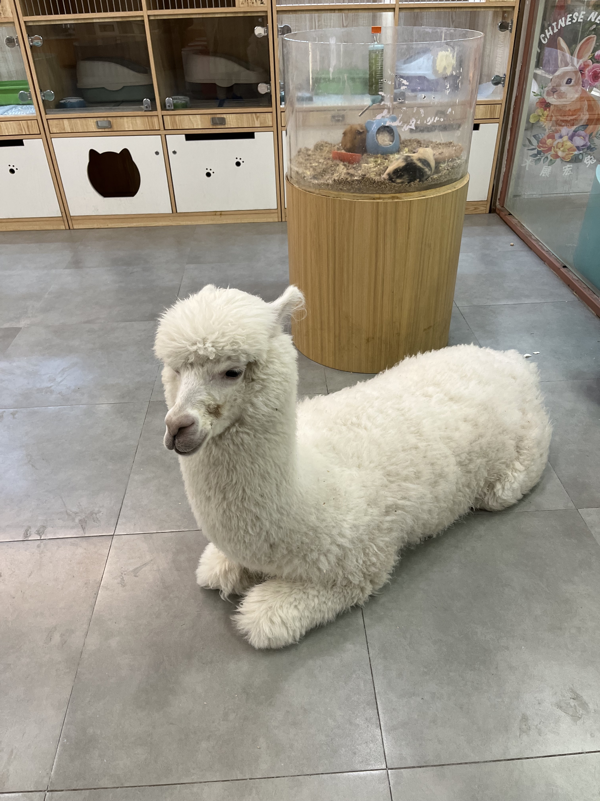
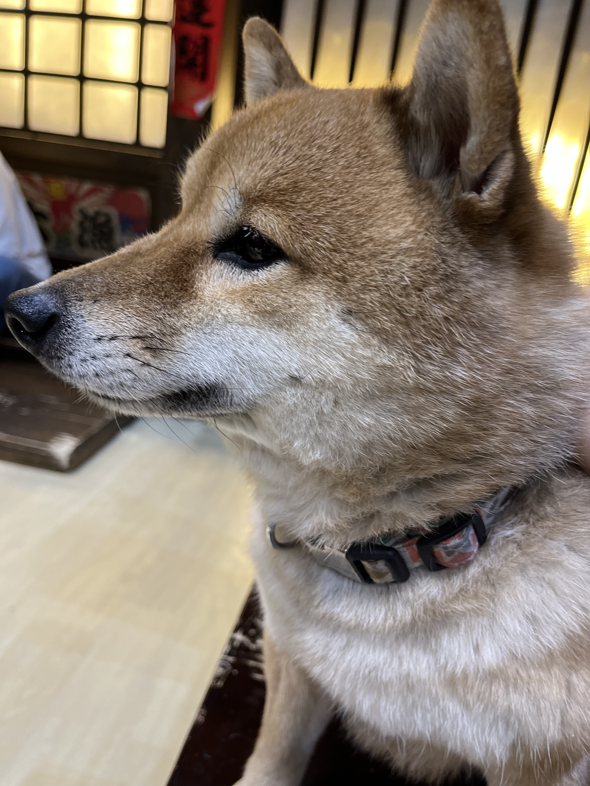

不要去撸宠店
2023-05-11
以前看到一个段子，原图找了好久没找着，大概内容是，有个网友试着花钱买爱情，4000 块钱，质量比较高的那种。然后网友发现，虽然小姐姐本人和照片里一样漂亮，身材也好，但满满的科技感。脸上、腿上，捏不起一点肉。如果让她跟你互动，她虽然会很配合你的要求，说一些话之类，但是言语之间、表情上都觉得，她有一些不耐烦，想要赶紧完事的感觉，然后这个网友就感慨说，她是没有感情的，不像活生生的人，更像是一种工具,不是一段太好的体验。
然后下面还有评论打趣说，你给我 4000 块钱，我保证像个活生生的人 :P
这让我想到去撸宠店的经历，凡是做买卖的，似乎都会出现这样的情况。平时在各种小视频里看到小奶猫、小柴犬，觉得这些宠物怎么这么可爱啊！然后实际上去了猫舍、狗屋，就会发现这些宠物根本不搭理你，因为你是陌生人。
第一次去猫舍就感觉被坑了，因为猫不让抱，店员说以前的客人对猫太凶了，导致很多猫脾气都不好，容易生气。然后再仔细一看，每只猫都哭丧着脸，一副被迫营业的表情，不是在睡觉就是躲得人远远的。
你可以给猫喂吃的，它们就会过来吃，也可以拿逗猫棒勾引它们，但是你会发现，它们的眼睛不会看你，因为不认识你，它们看着的是你手里的食物。它们不会钻到你手里让你摸头，更不会对着你笑。虽然各种猫都有，都是纯种，都很好看，但是没有感情。
让人意外的是店里的羊驼特别温顺，看起来没有脾气，亲近人，还吃我的鞋带。
不过这玩意儿就怕它跟你面对面的时候，它吐口水。羊驼生气了会吐口水，看过那样的视频，总是有那样的阴影在，就也不敢多看羊驼。
狗屋也是类似的感觉，纯种柴犬，长得很英俊，会自己找你手上拿的食物，但是不多看你一眼。小柴犬很活泼，满地打架。
